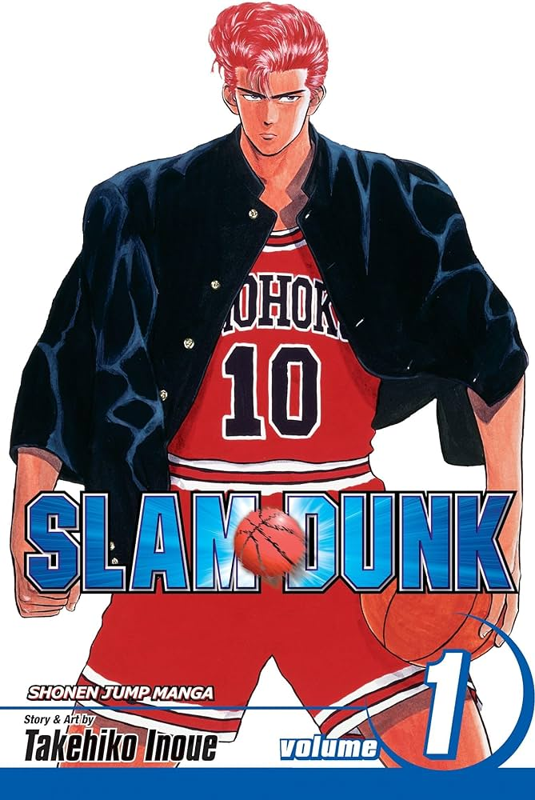
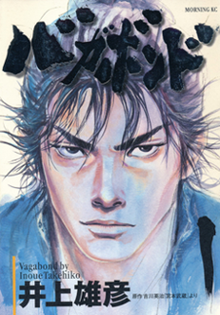
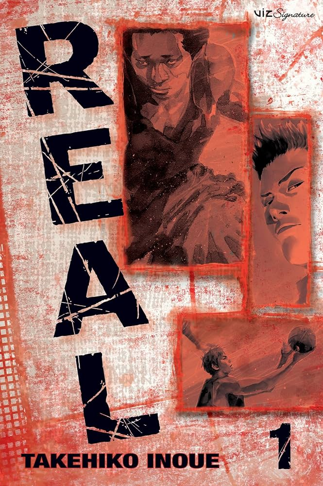
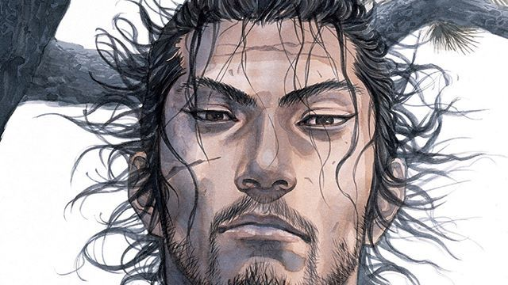
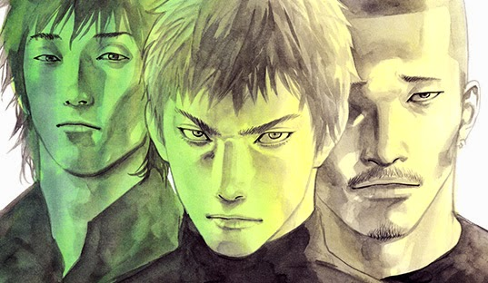

Takehiko Inoue

Takehiko Inoue (井上 雄彦, Inoue Takehiko, born 12 January 1967) is a
Japanese manga artist. He is best known for the basketball series
Slam Dank (1990-1996), and the jidaigeki manga
Vagabond, which are two of the best-selling
manga series in history. Many of his works are about basketball, Inoue
himself being a huge fan of the sport. His works sold in North America
through Viz Media are,Vagabond and Real, although
Slam Dank was earlier translated by Gutsoon!Entertainment. In 2012,
Inoue became the first recipient of the Cultural Prize at the Asia
Cosmopolitan Awards. Takehiko Inoue, starting as an assistant to
Tsukasa Hojo, made his manga debut in 1988 with "Purple Kaede" in
Weekly Shōnen Jump.Inoue gained fame with "Slam Dank" (1990-1996), a
basketball manga that sold over 170 million copies worldwide, received
awards, and led to an anime series and films."Vagabond" (1998),
adapted from Eiji Yoshikawa's accounts of Miyamoto Musashi, won the
Kodansha Manga Award and the Grand Prize of the 6th Osamu Tezuka
Culture Awards.While working on "Vagabond," Inoue created "Real"
(1999), a manga focusing on wheelchair basketball, receiving
recognition at the 2001 Japan Media Arts Festival.In 2022, Inoue
marked his directorial debut with "Slam Dank" an anime film adaptation
of his iconic work "Slam Dank" showcasing his versatility as a
creator.



-
Slam dank
"Slam Dunk" (1990-1996), a manga by Takehiko Inoue, follows a
high school basketball team's journey and significantly
impacted Japanese culture.It sold over 170 million copies
globally, won the Shogakukan Manga Award, and became Japan's
favorite manga in 2007.The series led to a 101-episode anime,
four films, and heightened interest in basketball among
Japanese youth.In 2006, Inoue and publisher Shueisha initiated
the Slam Dunk Scholarship program to further promote the
sport.Inoue's groundbreaking work not only popularized
basketball but also showcased his ability to blend sports,
drama, and humor seamlessly. In 2022, Inoue marked his
directorial debut with "The First Slam Dunk," an anime film
adaptation, highlighting the enduring impact of his creation
beyond the manga and anime mediums.

-
Vagabond
"Vagabond," launched in 1998, is Takehiko Inoue's adaptation
of Eiji Yoshikawa's samurai Miyamoto Musashi.This manga won
the Kodansha Manga Award and the Grand Prize at the 6th Osamu
Tezuka Culture Awards.Known for its captivating storytelling
and stunning art, "Vagabond" explores the fictionalized life
of Musashi.The series is acclaimed for its deep character
development and historical accuracy in depicting feudal
Japan.Inoue's mastery in illustrating both the physical and
emotional aspects of characters is evident in this samurai
epic.

-
Real
"Real," initiated in 1999, is Inoue's third basketball manga,
with a unique focus on wheelchair basketball.Recognized with
an Excellence Prize at the 2001 Japan Media Arts Festival, it
explores the challenges and triumphs of disabled athletes.The
manga delves into themes of resilience, friendship, and
personal growth, showcasing Inoue's diverse storytelling
abilities."Real" stands out for its realistic portrayal of
characters and situations, providing insight into the world of
adaptive sports.Inoue's commitment to depicting the internal
struggles of characters is vividly demonstrated in this
thought-provoking and emotionally resonant work.
